A First Comprehensive Study of TurboQuant: Accuracy and Performance
Introduction
TurboQuant, a method for KV-cache quantization, recently gained significant traction in the community due to the large advertised savings in GPU memory from very low bit-width quantization of a model's KV-cache. Unlike FP8 KV-cache quantization, which quantizes both the KV-cache storage and the attention computation itself using hardware-native FP8 Tensor Core operations, TurboQuant compresses only the KV-cache storage to 3-4 bits and dequantizes back to BF16 for the attention computation. This architectural difference has significant implications for both accuracy and performance.
However, most of the reported results were based on small models evaluated on short-context benchmarks that do not stress-test KV-cache quantization. To provide the community with more actionable data, we conducted a comprehensive study spanning four models (both dense-only and MoEs), from 30B to 200B+ parameters, and five benchmarks including both prefill-heavy long-context retrieval and decode-heavy reasoning workloads.
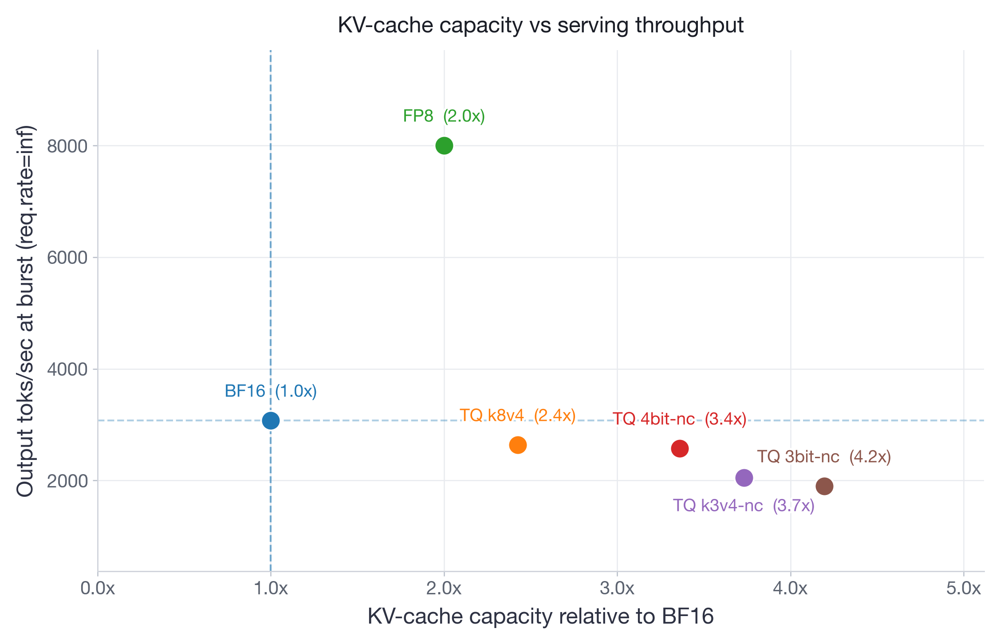
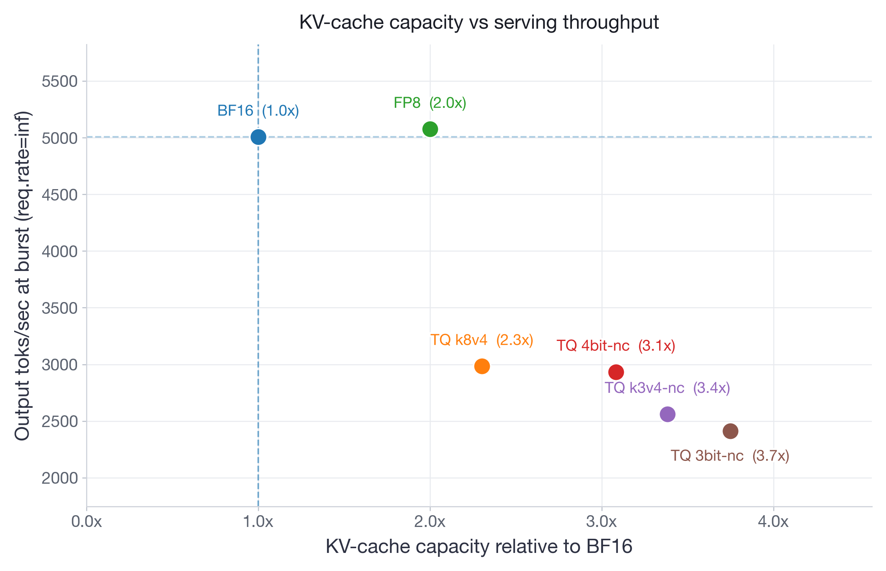
TL;DR
- FP8 via
--kv-cache-dtype fp8remains the best default for KV-cache quantization: it provides 2x KV-cache capacity with negligible accuracy loss, while matching BF16 on most performance metrics and substantially improving them in memory-constrained serving scenarios. - TurboQuant
k8v4does not provide any significant advantage over FP8: it only provides modest KV-cache savings (2.4x vs 2x) which are not worth the consistent negative impact on throughput and latency metrics. - TurboQuant
4bit-ncis likely the most practical TurboQuant variant: it helps under KV-cache memory pressure, but trades the extra capacity for moderate accuracy, latency, and throughput costs. It may still be viable for edge deployments where memory is the dominant constraint. - TurboQuant
k3v4-ncand3bit-ncshow meaningful accuracy drops, especially on reasoning and very long-context tasks, while also substantially degrading latency and throughput. This makes them poor candidates for production deployments.
Table of Contents
Quick start:
# FP8 KV-cache for all layers
vllm serve MiniMaxAI/MiniMax-M2.7 --kv-cache-dtype fp8
# TurboQuant KV-cache, skipping the first and last two layers
vllm serve MiniMaxAI/MiniMax-M2.7 --kv-cache-dtype turboquant_4bit_ncExperimental Setup
Quantization Schemes: We benchmark four TurboQuant
variants (--kv-cache-dtype turboquant_{k8v4, 4bit_nc, k3v4_nc, 3bit_nc})
against unquantized BF16 and FP8 KV-cache baselines. turboquant_k8v4
uses 8-bit keys and 4-bit values; turboquant_4bit_nc
uses 4-bit keys and values with norm correction; turboquant_k3v4_nc
uses 3-bit keys and 4-bit values with norm correction; and turboquant_3bit_nc
uses 3-bit keys and values with norm correction. The FP8 baseline (--kv-cache-dtype fp8)
stores queries, keys, and values in FP8 precision, and also quantizes
the attention computation itself — a key difference from TurboQuant,
which only compresses storage. For more details on each TurboQuant
variant, please refer to the paper and vLLM documentation. For more details on
FP8 KV-cache quantization, please refer to the FP8 KV-cache blog post.
Benchmarks: We evaluate on five benchmarks designed
to stress-test KV-cache quantization across both prefill-heavy and
decode-heavy workloads. For long-context retrieval (prefill-heavy), we
use openai/mrcr
— a challenging multi-round context retrieval task testing sequence
lengths up to each model's maximum supported length. For reasoning
(decode-heavy), we use AIME25, GPQA:Diamond, MATH500, and
LiveCodeBench-v6. All evaluations adopt the default non-greedy sampling
parameters suggested by model creators to mimic real-world
deployment.
Models: We focus on four models spanning both small
and large scale, and both dense-only and MoE architectures: Llama-3.3-70B-Instruct,
Qwen3-30B-A3B-Instruct-2507,
Qwen3-30B-A3B-Thinking-2507,
and MiniMax-M2.7.
At the time of writing, TurboQuant supports only models with standard
attention mechanisms (e.g. GQA) — models with sliding-window or hybrid
attention are not yet supported.
Accuracy Results
Long-context Retrieval
For long-context evaluation, we use the openai/mrcr
task, testing sequence lengths up to each model's maximum supported
length. We report the average pass@1 score for each sequence-length
bucket over 5 repetitions, and the Area-Under-Curve (AUC) as an
aggregate metric across all tested lengths (Context Arena).
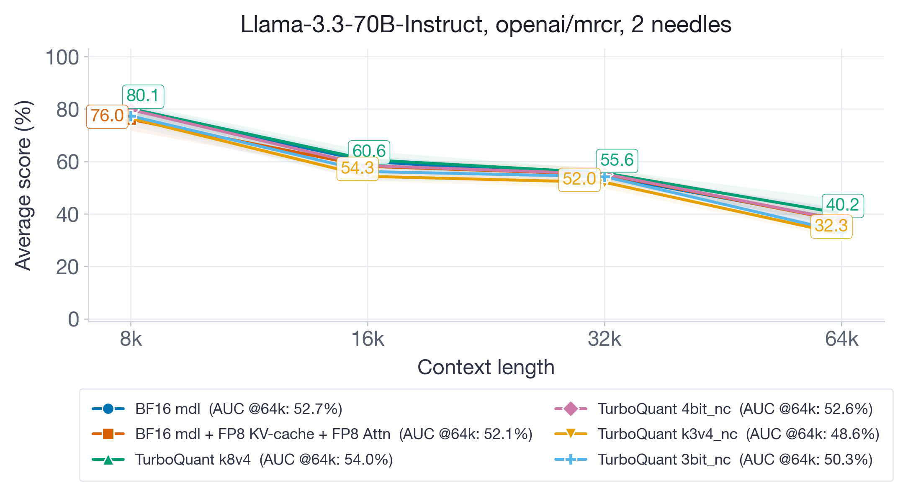
On Llama-3.3-70B-Instruct (Figure 3), the higher-bit TurboQuant variants (k8v4 and 4bit-nc) preserve long-context retrieval well and maintain competitive AUC (~52%). However, TQ k3v4-nc (48.6%) and 3bit-nc (50.3%) show noticeable and consistent degradation across all sequence lengths, with the gap widening at 64k context where the accuracy drop is up to 8 points.
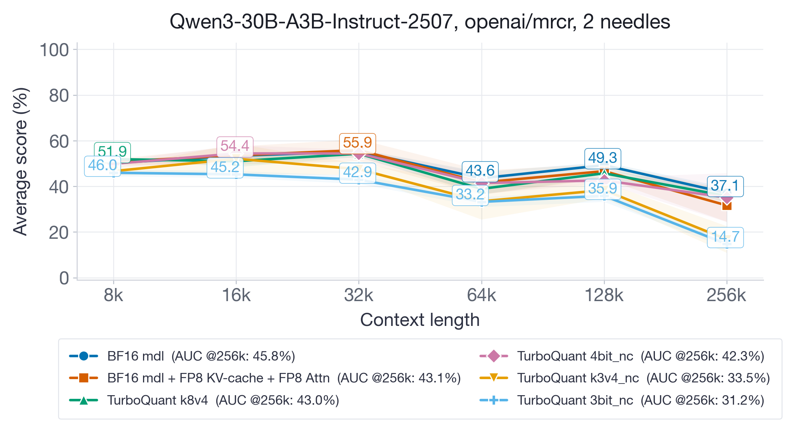
On Qwen3-30B-A3B-Instruct-2507 (Figure 4), which supports longer contexts up to 256k, discrepancies are more pronounced. BF16 (45.8%), FP8 (43.1%), and TQ k8v4 (43.0%) remain within the standard deviation of each other. TQ 4bit-nc (42.3%) is also competitive. But the aggressive variants degrade substantially: TQ k3v4-nc drops to 33.5% AUC and TQ 3bit-nc to 31.2% — a ~30% relative degradation from BF16. The degradation is concentrated at the longest context lengths (128k-256k), suggesting that low-bit KV-cache quantization errors accumulate with sequence length.
Takeaway: TQ k8v4 and 4bit-nc are safe for long-context retrieval. TQ k3v4-nc and 3bit-nc show meaningful accuracy degradation, especially at very long contexts. FP8 matches the higher-bit TQ variants while providing better inference performance (shown later).
Reasoning
For decode-heavy reasoning benchmarks, we use AIME25, GPQA:Diamond, MATH500, and LiveCodeBench-v6. We report the average pass@1 score: over 10 repetitions for AIME25 and LiveCodeBench-v6, and over 5 repetitions for GPQA:Diamond and MATH500.
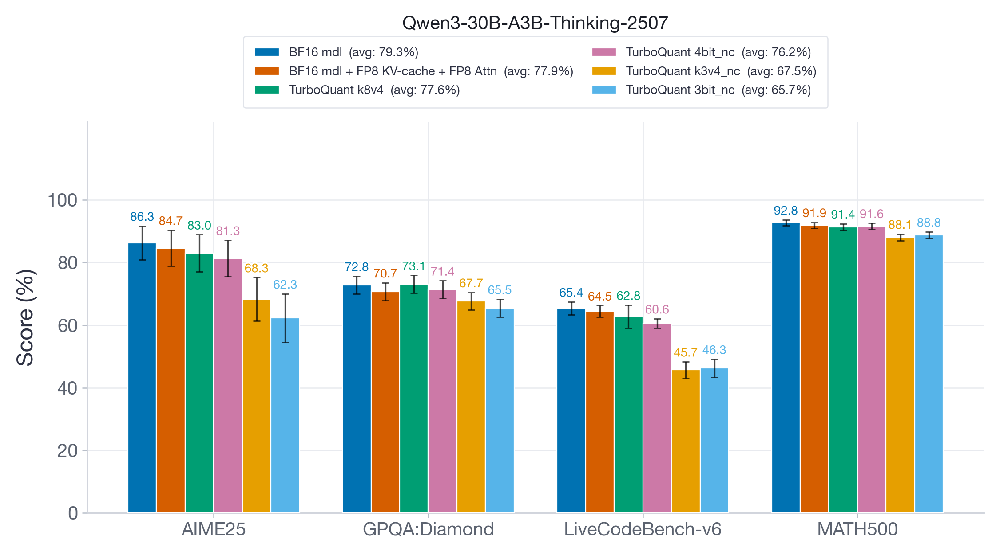
On Qwen3-30B-A3B-Thinking-2507 (Figure 5), we see a clear accuracy hierarchy. FP8 and TQ k8v4 are close to the BF16 baseline with >98% average accuracy recovery. TQ 4bit-nc shows a slightly larger drop with 96% recovery, whereas TQ k3v4-nc and 3bit-nc show drastic accuracy drops of ~20 points. Even on the relatively easy MATH500 benchmark, the accuracy drop is ~4 points, indicating that aggressive TurboQuant variants are not suitable for long-generation reasoning tasks.
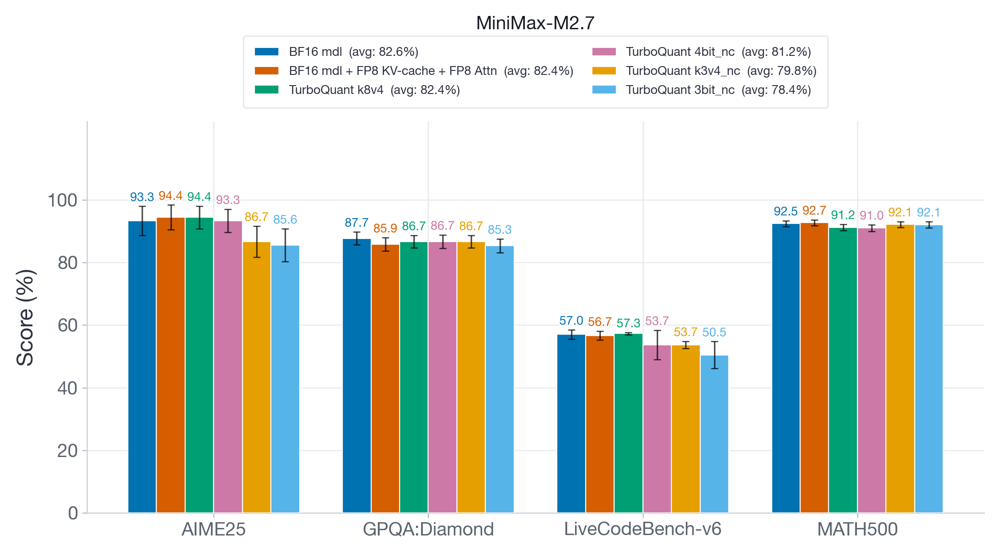
On MiniMax-M2.7 (Figure 6), a much larger 200B+ parameter model, we observe similar patterns. FP8 and TQ k8v4 maintain >99% accuracy recovery, whereas TQ 4bit-nc shows a modest drop. Just like with the smaller Qwen model, aggressive TQ variants (k3v4-nc, 3bit-nc) show significant accuracy degradation, especially on AIME25 and LiveCodeBench-v6 with accuracy drops of up to ~8 points.
Takeaway: Aggressive TurboQuant variants (k3v4-nc, 3bit-nc) show significant accuracy degradation, especially on hard math and coding tasks like AIME25 and LiveCodeBench-v6. TQ 4bit-nc shows a modest accuracy drop, whereas TQ k8v4 performs on par with the unquantized BF16 baseline. FP8 also matches the unquantized baseline; however, it provides significantly better inference performance than any of the TurboQuant variants (shown later).
Performance Results
For performance benchmarking, we focus on Qwen3-30B-A3B-Instruct-2507
(2xH100) and Llama-3.3-70B-Instruct
(4xH100). We measure latency, offline throughput, and online serving
metrics (TPOT and TTFT) under various request rates. We deploy models
with vLLM version 0.20.2
(commit 6ec9bbec3).
Latency
We measure latency with vllm bench latency
using fixed synthetic requests with input length 1024 and output length
256, sweeping batch sizes 1, 8, 32, and 64. Each configuration used 10
warmup iterations followed by 30 measured iterations. Results are shown
as slowdown relative to BF16 (lower is better).
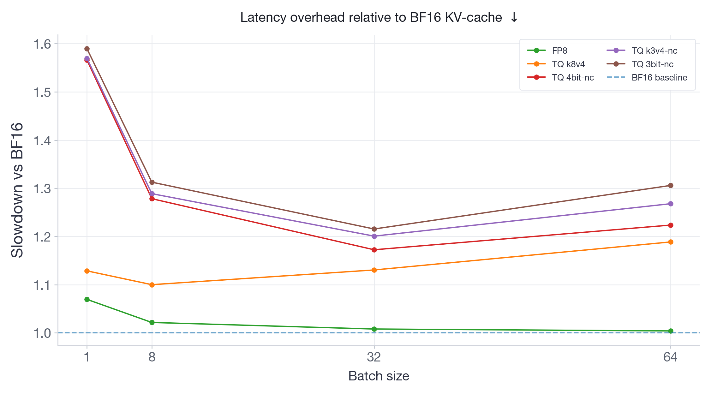
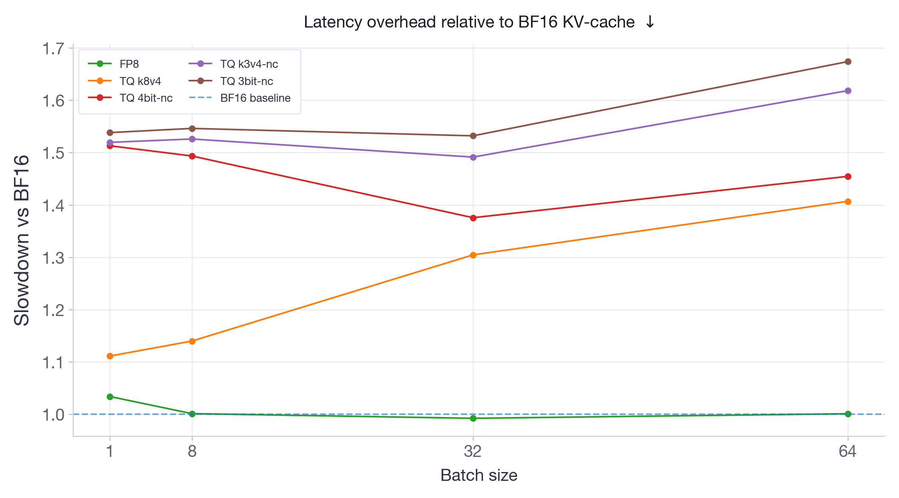
FP8 consistently runs at negligible or no latency overhead across both models and all batch sizes — this is expected since FP8 quantizes the attention computation itself using hardware-native FP8 Tensor Core operations, avoiding dequantization overhead. All TurboQuant variants add measurable latency: on Qwen3-30B (Figure 7), overheads range from ~10% to ~60%; on Llama-3.3-70B (Figure 8), overheads are higher overall, ranging from ~10% to ~68%. Notably, for the larger Llama-70B model, the TQ overhead tends to increase with batch size — the opposite of what we'd want for this use case. This is because TurboQuant has to dequantize the KV-cache from low-bit storage back to BF16 before computing attention, and this dequantization cost grows with the amount of KV-cache being accessed.
Throughput
We measure offline throughput with vllm bench throughput
using 200 prompts across three input/output length pairs: 256/256,
1024/512, and 4096/256. Results are shown as a percentage of BF16
throughput (higher is better).
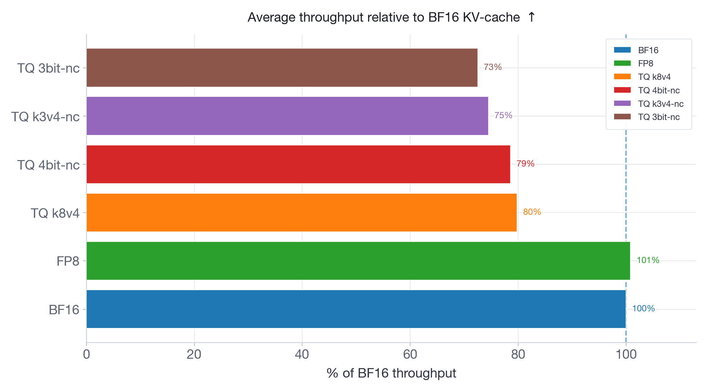
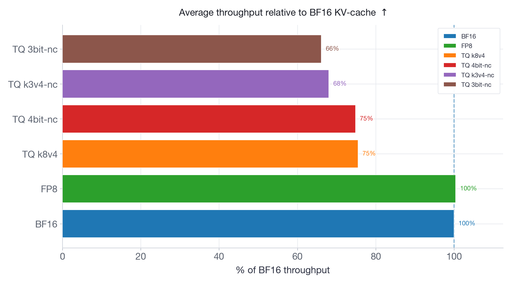
The throughput results reinforce the latency findings. FP8 matches BF16 throughput on both models. All TurboQuant variants are strictly below BF16: on Qwen3-30B (Figure 9), ranging from 80% (k8v4) to 73% (3bit-nc); on Llama-70B (Figure 10), from 75% (k8v4 and 4bit-nc) to 66% (3bit-nc). More aggressive quantization consistently yields lower throughput — the dequantization overhead grows with the complexity of the packing format.
Serving Speed
We measure serving performance with vllm bench serve
by using synthetic requests with input length 1024 and output length
512, 300 measured prompts, and 5 warmup requests. We test request rates
2, 8, and inf
(send requests as fast as possible). We report both TPOT (Time Per
Output Token — measures decode speed) and P99 TTFT (Time To First Token
— measures how quickly a request starts generating).
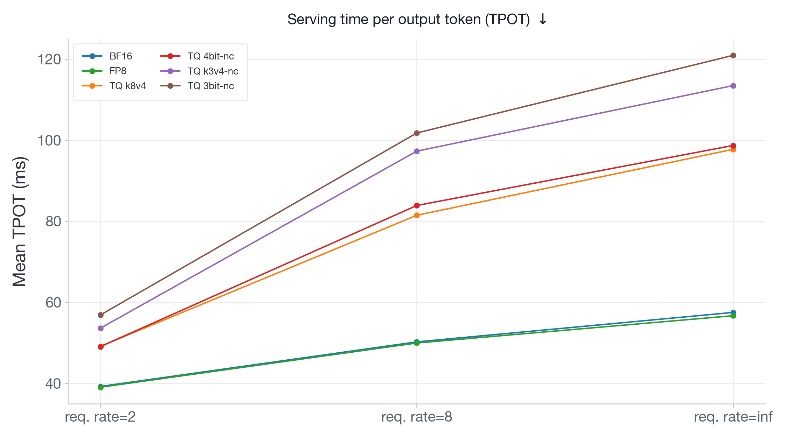
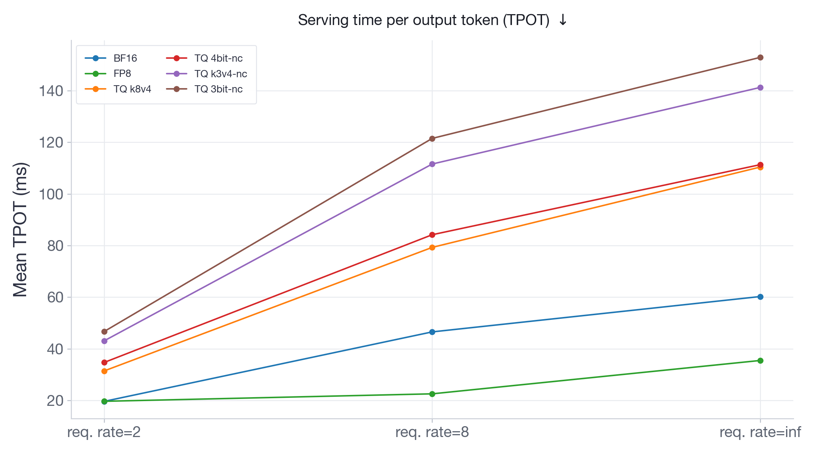
The TPOT results (Figures 11-12) mirror the latency and throughput findings: FP8 either tracks or outperforms BF16 across all request rates, while TQ variants add substantial per-token overhead that grows with load. At burst on Llama-70B, FP8 is almost 2x faster than BF16, while TQ variants are 1.5x to 2.5x slower.
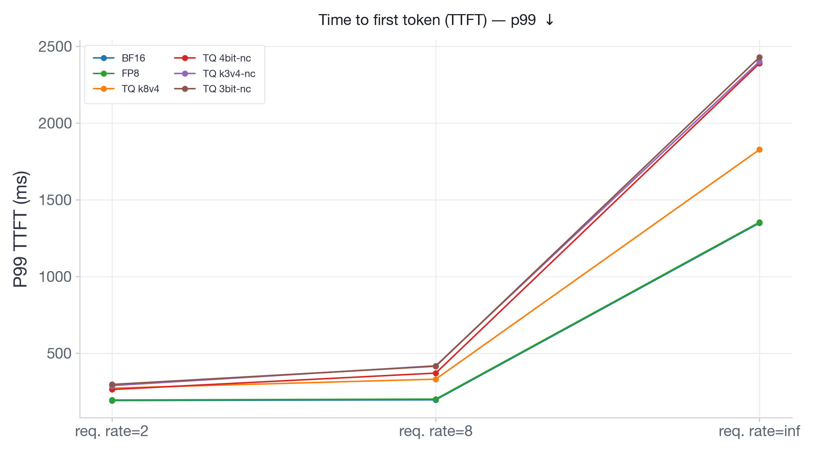
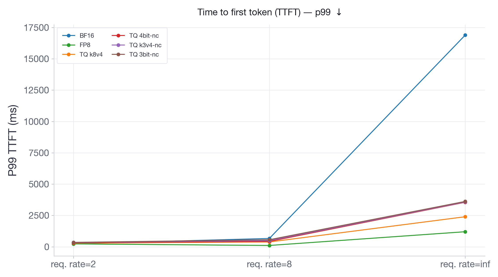
On Qwen3-30B (Figure 13), which has more memory headroom on 2xH100, FP8 performs identical to BF16 across all request rates. TurboQuant variants are consistently slower, with slowdowns going up to 2x at burst. On Llama-3.3-70B (Figure 14), running on 4xH100 with limited room for KV-cache, BF16 TTFT at burst explodes to ~17s as the system runs out of KV-cache memory and must queue incoming requests. All TurboQuant variants stay under 3.5s — a 5x improvement — because their compressed KV-cache allows more concurrent requests to be processed without queuing. At the same time, FP8 achieves the lowest TTFT at ~1.3s and consistently outperforms all TurboQuant variants.
Takeaway: TurboQuant consistently underperforms both BF16 and FP8 by reducing throughput and increasing per-token latency. However, in memory-constrained serving scenarios, the KV-cache compression prevents memory saturation and dramatically reduces TTFT under burst load relative to BF16. This is the core of TurboQuant's value proposition: it trades per-token speed for the ability to serve requests that would otherwise be queued. FP8, on the other hand, provides the best of both worlds: it matches or outperforms BF16 throughput while providing negligible latency overhead and significantly better TTFT under burst load.
Key Findings and Recommendations
Based on the comprehensive evaluation across accuracy and performance benchmarks, we conclude with the following practical recommendations:
FP8 (--kv-cache-dtype fp8)
remains the best default for KV-cache quantization. FP8
provides 2x KV-cache capacity with no throughput cost, negligible
accuracy loss, and sometimes even improved performance via quantized
attention. It is the safest and most predictable choice for the vast
majority of workloads, as also detailed in the FP8 KV-cache blog post.
TurboQuant k8v4 does not provide any significant advantage over FP8. This TQ variant only provides modest KV-cache savings (2.4x vs 2x), which are not worth the consistent negative impact on throughput and latency metrics.
TurboQuant 4bit-nc offers a compelling memory-for-throughput tradeoff. This variant provides up to 3.4x KV-cache capacity with modest accuracy degradation of 1-4 points on most benchmarks. It is particularly valuable for memory-constrained deployments where the TTFT improvement at burst load outweighs the negative impact on all other metrics. Thoroughly validate accuracy on the target workload before deploying.
Avoid TurboQuant k3v4-nc and 3bit-nc without thorough validation. These aggressive variants can cause drastic accuracy drops that reach up to 20 points on challenging math and coding benchmarks. In addition to accuracy, their consistent performance degradation due to complex dequantization steps renders them unsuitable for production deployments.
Stay with BF16 when GPU memory is not a bottleneck. If your workload uses short contexts, runs at low concurrency, or your hardware has ample memory, BF16 gives the best accuracy-performance trade-off without the risk of quantization artifacts.